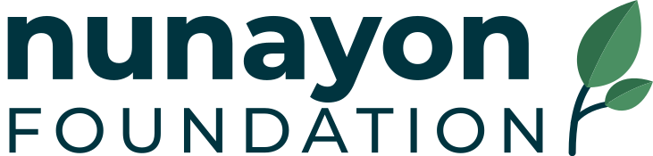
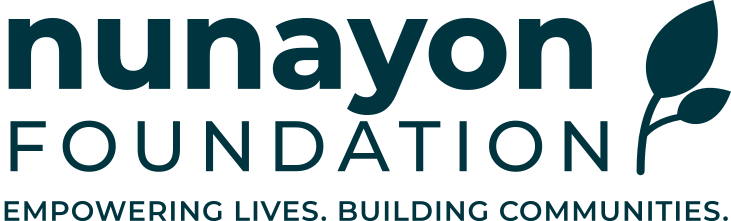
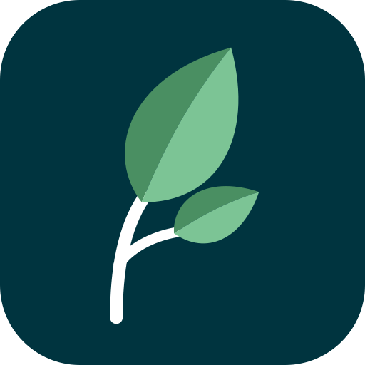
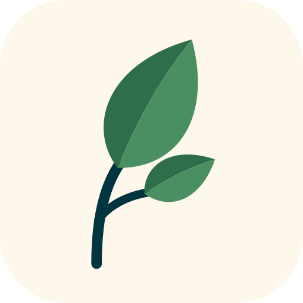
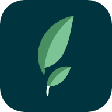

01 · Logo
Logo versions
A clean vector rebuild of the original mark, with the sprout growing out of the final N. Use the primary lockup wherever it fits, the horizontal lockup in the site header, and the sprout badge for icons and avatars.
Primary · nunayon-logo-primary.svg

No tagline · nunayon-logo-no-tagline.svg
Reversed · nunayon-logo-reversed.svgHorizontal · nunayon-logo-horizontal.svg

Horizontal reversed
Mono teal · print & stamps
Mono whiteSprout mark · nunayon-mark.svg
02 · Icons
Favicon & app icon

Badge · teal
Badge · cream
64px03 · Colour
Palette
Teal and Leaf Green come straight from the logo. Cream and Sand carry the warmth of the original artwork. Sunrise Amber is kept for the Donate button only.
Aa 13.4
Graphics only
Logo only
Aa 6.1
Aa 6.4
Aa 6.5
Aa
Aa 12.6
Aa
Aa 6.2
Aa 6.5
04 · Typography
Montserrat
Display · 800
Every life can grow.
H2 · 700
Building stronger communities
H3 · 700
Education & skills
Eyebrow · 600
Our programmes
Body · 400
We work alongside families and local leaders to open doors to education, health and opportunity, so that every person can thrive.
05 · Components
Buttons & cards
Programme
Community learning hubs
Safe spaces where children and adults learn, connect and grow together.